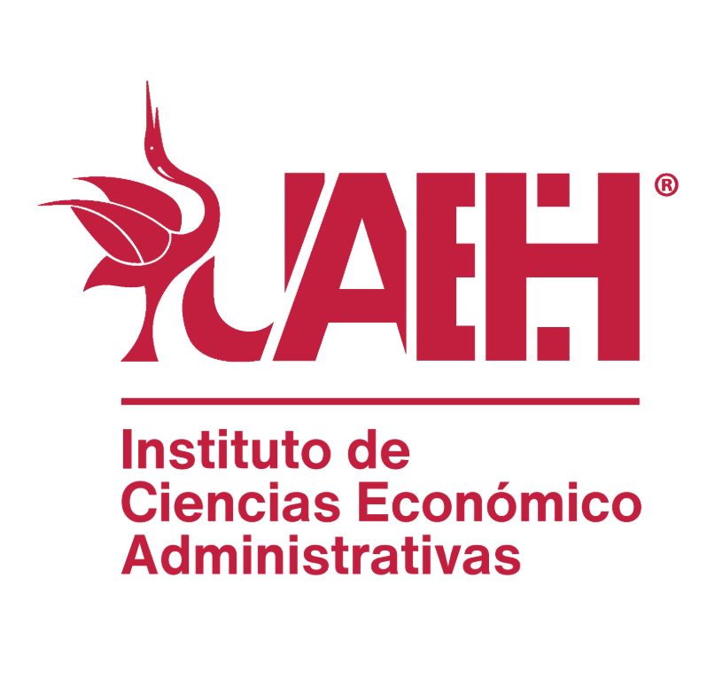
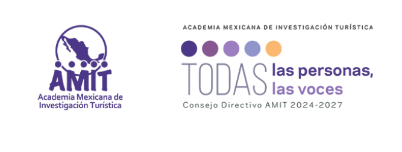
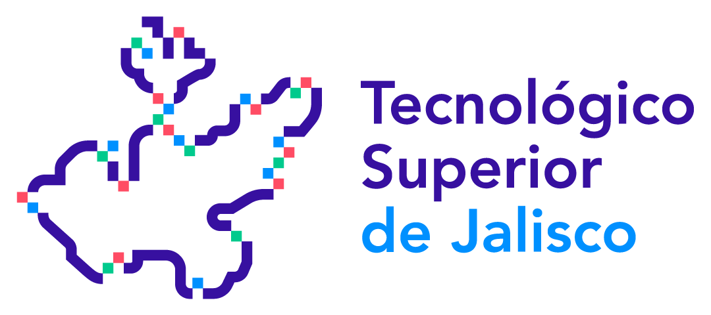

2º Seminario de
Turismo y Gastronomía
Inteligencia Artificial y Agenda Digital para la transformación del turismo y la gastronomía




La colaboración institucional y el uso público de identidades deberán contar con las autorizaciones correspondientes.
Aprender, aplicar y compartir. Talleres prácticos para desarrollar competencias y crear soluciones aplicables al turismo y la gastronomía; no se trata de conferencias ni de presentaciones de avances de investigación.
ASISTENTES · INSCRIPCIONES 26 OCT – 6 NOVPrograma académico
Próximamente se publicarán los talleres, las personas talleristas, las fechas y los enlaces de acceso. Se prevén nueve sesiones virtuales de dos horas, con actividades complementarias de aprendizaje independiente; el número de sesiones por semana está por confirmarse.
Colaboración académica
Cuerpos académicos principales de Hidalgo, Jalisco y Colima, con la Comisión de Intercambio de Saberes y Formación Colaborativa de la AMIT como instancia central de articulación.
Ecosistemas Inteligentes e Innovación en Turismo
UAEH · ICEA · Área Académica de TurismoEstudios Turísticos y Gastronómicos
Universidad de Colima · Facultad de Turismo y GastronomíaITESDPV-CA-5 Diseño e Innovación
Tecnológico Nacional de México · Instituto Tecnológico José Mario Molina Pasquel y Henríquez · Puerto VallartaCuerpos académicos y grupos de investigación del ICEA que se suman
CA en Estudios Turísticos y Desarrollo
UAEH · ICEAGI en Tendencias Turísticas
UAEH · ICEAInformación y registro de asistentes
Registro de asistentes
Del 26 de octubre al 6 de noviembre de 2026. Inscripción gratuita, dirigida a estudiantes, docentes, investigadores, egresados y profesionales del turismo y la gastronomía.
El enlace de registro se habilitará el 26 de octubre.
Modalidad y constancias
Sesiones virtuales de dos horas, previstas entre el 9 de noviembre y el 11 de diciembre. El calendario y los criterios para constancias se comunicarán con el programa definitivo.
El seminario promueve el acceso universal gratuito al conocimiento.